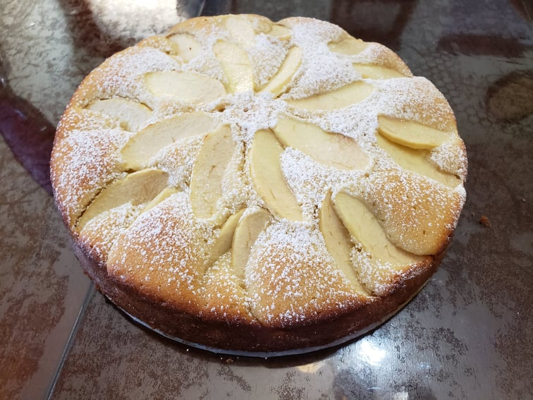

Versunken Apfelkuchen

Ingredients:
- 2-3 Apples, preferably
- 1 tbsp Lemon juice
- 1/2 cup Unsalted butter, softened
- 3/4 cup Sugar
- 3 Eggs
- 1 3/4 cup Flour
- 2 tsp Baking powder
- 1/2 tsp Salt
- 1/2 cup Milk
- Powdered sugar
Instructions:
- Preheat oven to 350 degrees Fahrenheit.
- In a large bowl, cream together the butter and sugar using an electric hand mixer. Add eggs and beat until fluffy.
- Sift the flour, baking powder, and salt into a separate bowl and mix to combine.
- Incrementally add the flour mixture and the milk into the wet ingredients. Mix until well incorporated and the batter is smooth.
- Pour the batter into a greased 10 inch springform pan.
- Slice and core the apples and toss the slices in the lemon juice to prevent browning.
- Place the slices onto the batter and press down lightly.
- Bake the cake for 35-40 minutes, until a toothpick inserted in the center of the cake comes out clean.
- Remove the cake from the oven and cool for 15 minutes in the pan. Run a knife around the edges of the cake and remove the spring form edge. Dust with powdered sugar and serve.